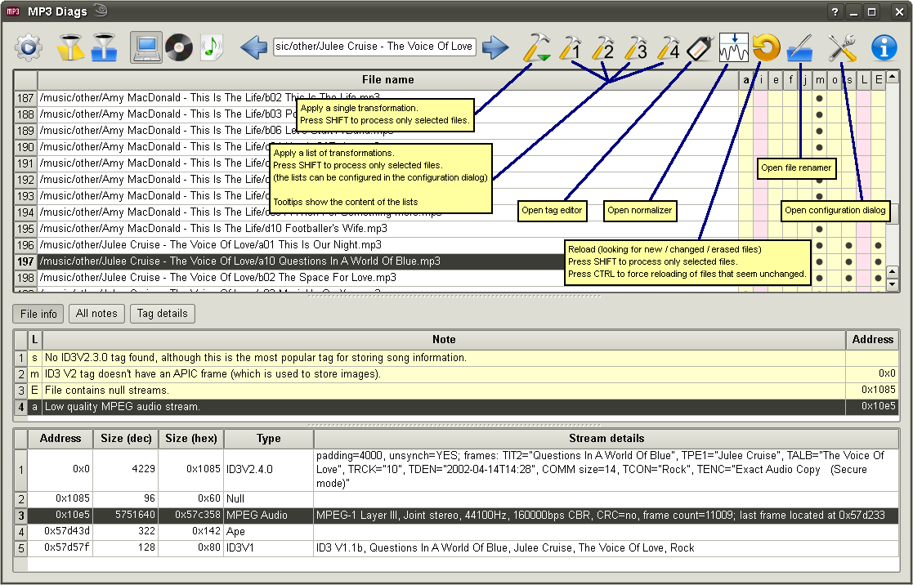

Before going any further, I should state the obvious: if you like your files and they don't bother you, then you probably shouldn't change them. Anyway, if MP3 Diags finds errors, it is possible for you to have problems playing those files with other players or processing them with other tools. Still, it's a good idea to delay any changes until they seem to be needed. When you start to make changes, it's probably best to just back up all your files before proceeding. Or you may want to use the backup functionality that MP3 Diags provides, by using the simple option provided at startup or by playing with various options in the configuration.
There are two ways to change a file in MP3 Diags: saving ID3V2 tags in the
tag editor and applying a "transformation" (or a "transformation list"); there are some configuration settings that determine what happens with the files when transformations are applied, and, because saving from the tag editor is treated internally as just another transformation, these settings also concern saving ID3V2. (Well, there's also a third way to change files, the
normalization, but that's done by an external program, so it's a different story; all that MP3 Diags does with the files when asked to do a normalization is rescan them after calling the external program.)
There are more than 20 transformations that can be applied to an MP3 file or to a group of files. There are 2 ways to apply transformations:
- Pick a single transformation from the menu that opens when clicking on the "Apply a single transformation" button
- Click on one of the four buttons corresponding to the four "Custom transformation lists"
Normally transformations are applied to all the files that are visible (well, or can be made visible by using the vertical scrollbar.) However, if you press SHIFT while clicking, the transformations apply only to the files that are selected. The same can be achieved by clicking on the right button after clicking on the left one and before releasing it. This is similar to "rocker gestures" in web browsers, about which I only found out (believe it or not) some time after implementing this functionality in MP3 Diags. For the "single transformation button", opening the menu with the left button and making the selection with the right button does the trick. (I assume that left-handed people already know that "left is right" when it comes to mouse buttons.)
In order to reduce the screen clutter a little, not all transformations are shown be default. Those that seemed quite unlikely to be needed are hidden. What is hidden and visible can be changed in the
configuration dialog.
Note. When you "apply a transformation" it doesn't necessarily mean that a file will get changed in some way. If the transformation doesn't make sense to a particular file (e.g. trying to "Repair VBR data" in a CBR file), that file is left untouched. So even if the transformation lists contain many transformations, they may still end up leaving the file unchanged. The lists may work pretty well when applied to whole collections, because they take into account various problems and only change the files that have those problems. If you want to get a list of all the transformations that have actually changed files, you can make visible the
"Debug" button and enable "Log transformation".
You can get an idea about what the "custom transformation lists" are good for by looking at the default values (either by hovering the mouse over the buttons, to show tooltips, or by going to the
configuration.) The point is that for some of the 20+ transformations it makes sense to apply them sequentially to a file to achieve a "higher goal". In the default configuration, the first custom button fixes the audio part of a file, the second takes care of the ID3V2 tag, the third cleans up the rest of the file, and the fourth is a combination of the first three.
I think it's better to use the first three buttons, rather than the fourth. I feel more comfortable this way. Personally, I like to review the effects of some changes before going any further, and this grouping seems to work best for me.
Several points need to be made about the custom transformation lists:
- You shoudln't blindly use the default lists. Try to understand what each transformation does and how it may affect your files, then perhaps go to the configuration and make some changes to the lists so they better fit your particular needs.
- Review the order in which transformations get applied. Sometimes it doesn't matter but usually it does.
- Look at what the other transformations are doing, and change the lists to better suit your needs. Then test your changes.
- The same transformation may be added multiple times, but usually there's no need for such a thing.
It is possible to right-click on a cell with a note or on the note's column header to get a list of possible fixes and perhaps apply one of them. The way this works is adequate in many cases, but far from perfect. The implementation can be refined a bit, but there's the more serious issue that whether doing something that makes a note disappear can really be considered a "fix". This is something subjective. Another factor making the right-click less than ideal is that usually it's better to look at all the notes instead of focusing on any particular one, because many times one issue can be seen as the "real problem", but it causes several notes to be shown, and focusing on the "wrong one" might lead to confusion. So I would recommended the right-click mainly as a means to get familiar with the program's capabilities, rather than for heavy use.
Note that to apply a transformation only to the selected files when right-clicking on the header you need to keep SHIFT pressed, or to make the selection with the right button.
There are a number of files involved in applying a transformation to a file. Besides the original file and the modified one, "comparison" files may be created in some cases and "temporary" files may be created too, their name containing the name of the transformation that created them. These are disabled by default, but may be enabled in the
configuration dialog to gain a better understanding of what is happening, or for debug purposes.